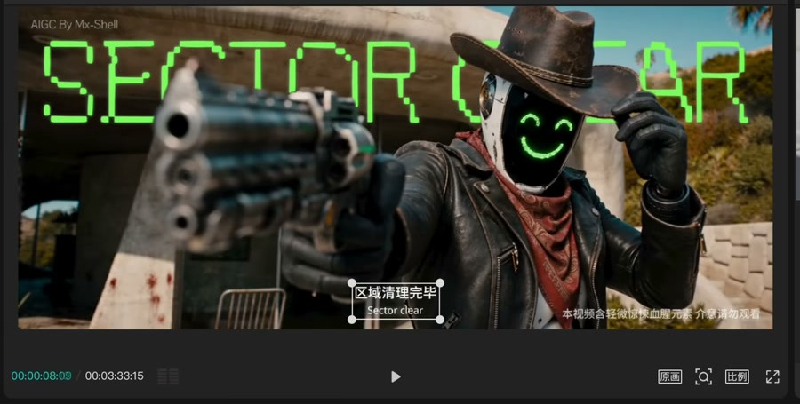
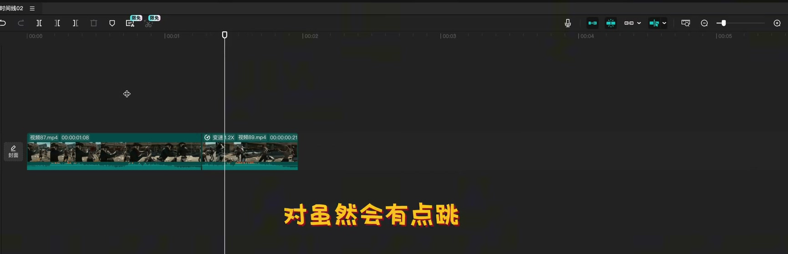

POST / CONTINUITY CHECK
连续性在后期完成
不同生成段要被剪成同一个故事


SOURCE FRAME · 33:54 / LAYER OPERATION
SOURCE FRAME · 36:40 / EDITING TIMELINE
人物抠像 → 字幕置后 → 背景
01动作方向
02镜头运动
03速度
04光线
05色温 / 调色
06前后镜头逻辑
连续性既影响选片，也反过来影响生成时的镜头设计。
CASE 13 · 00:33:54 / 00:36:40
render_mode: hybrid
07 / 10